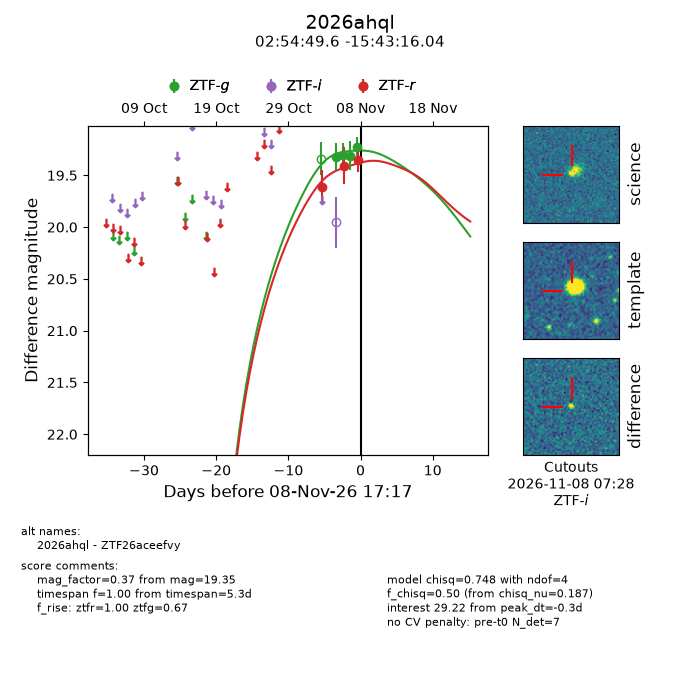
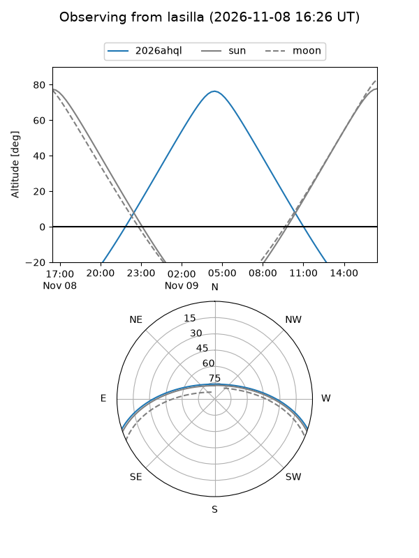
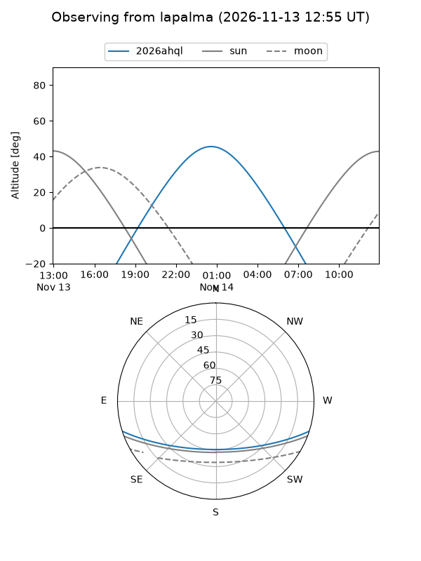
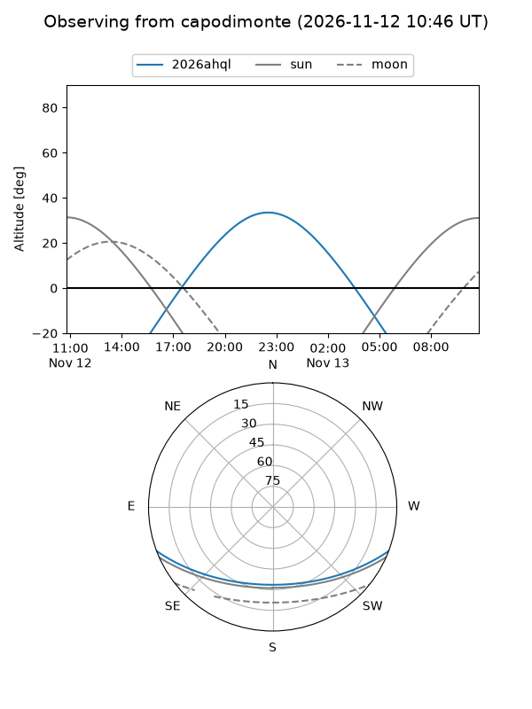
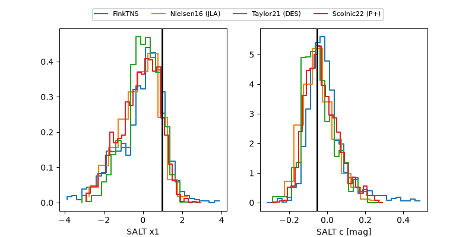

2026ahql
Target 2026ahql at 2026-11-08 17:21
Aliases and brokers:
FINK-ZTF: ztf.fink-portal.org/ZTF26aceefvy
Lasair-ZTF: lasair-ztf.lsst.ac.uk/objects/ZTF26aceefvy
ALeRCE-ZTF: alerce.online/object/ZTF26aceefvy
YSE-PZ: ziggy.ucolick.org/yse/transient_detail/2026ahql
TNS name: wis-tns.org/object/2026ahql
Direct TNS query: direct search
alt names
ZTF26aceefvy (ztf,fink_ztf)
2026ahql (tns,yse)
Coordinates:
equatorial (ra, dec) = 43.7066,-15.72112
equatorial (HMS+DMS) = 02:54:49.59,-15:43:16.04
galactic (l, b) = (197.5604,-59.21086)
Flags:
peak dt: -0.3
Photometry:
last ztfg=19.22, ztfr=19.35
4 ztfg, 3 ztfr detections
Lightcurve

Visibility



Additional plots
